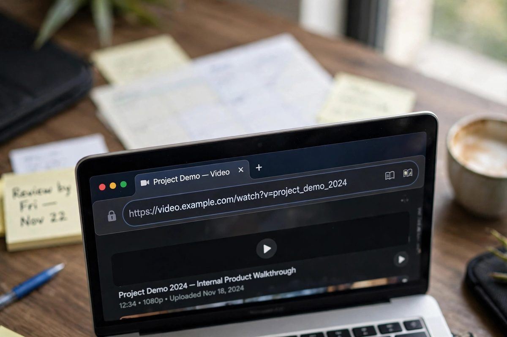

YouTube Video URL Formats: Watch, Shorts, Embed, and Short Links
Every YouTube link format explained: watch URLs, youtu.be links, Shorts, embeds, and how to read the video ID.
YouTube links come in several shapes, and they all point to the same videos, but they are not interchangeable in every situation. A link copied from the Share button looks different from the address in the browser bar, a Shorts link looks different again, and an embed link is built for websites. This guide explains each format, how to find the video ID inside it, and which format to use when you paste a link into a tool or share it with someone.
The watch URL
The classic format is youtube.com/watch?v=VIDEO_ID, with extra parameters after an ampersand, such as a timestamp or a playlist ID. The video ID is the eleven characters immediately after v=, made of letters, numbers, hyphens, and underscores. Everything after the ID is optional, so you can safely remove the extra parameters when you share a clean link. If a link has no v= parameter, it is probably not a video link at all, but a channel or search link.
Short links and Shorts
The Share button often gives a short link like youtu.be/VIDEO_ID, which redirects to the full watch page. It is handy in messages because it is compact. Shorts use youtube.com/shorts/VIDEO_ID, and the same ID appears after /shorts/. Mobile links may use m.youtube.com, and music links use music.youtube.com, but the video ID works the same way. Our URL validator tool on this site accepts all of these formats and tells you the video ID it found.
Embed and timestamp links
An embed URL looks like youtube.com/embed/VIDEO_ID and is used to place a video inside a blog post or a web page. A timestamp link adds &t=90s to start the video 90 seconds in, which is useful when you want someone to see a specific moment. A playlist link adds &list= followed by a long playlist ID, and the video ID still comes first. When you paste a link into a downloader or info tool, the tool usually ignores the extra parameters and uses only the video ID.
Common link mistakes
The most common mistake is copying a channel URL, which looks like youtube.com/@channelname, and expecting a tool to find a video in it. Another is copying a search results URL, which contains no video ID. A third is copying a link with a typo in the ID, which points to a different video or to an error page. Always open the link in a browser before you paste it into a tool, and check that the video that loads is the one you meant.
Short links in messages
Short links are convenient in messages, but they hide the destination, which is why they are also used by scammers. A youtu.be link is safe when it comes from someone you trust, because it simply redirects to YouTube, but a short link from a stranger could point anywhere. The habit that protects you is to look at the link before you tap it: on most phones, a long press shows the full address, and in a messaging app you can ask the sender what the video is about. If you are sharing a link yourself, use the full watch URL when the recipient is cautious, because it shows the video ID and the domain clearly. For a printed document or a presentation, a short link is tidier, but a full link is more transparent. The format you choose sends a small signal about trust, and the full link is the more trustworthy one.
Frequently Asked Questions
What is the video ID?
The eleven-character code that identifies a video, found after v= in a watch URL or after the slash in a youtu.be link.
Do short links work the same?
Yes. youtu.be links point to the same video as the full watch URL with the same ID.
What is an embed URL?
An embed URL, youtube.com/embed/VIDEO_ID, is the version used to show a video inside another website.